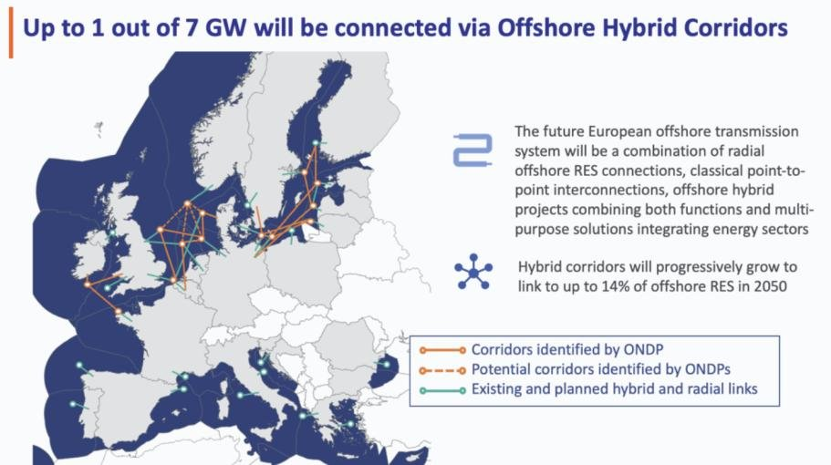
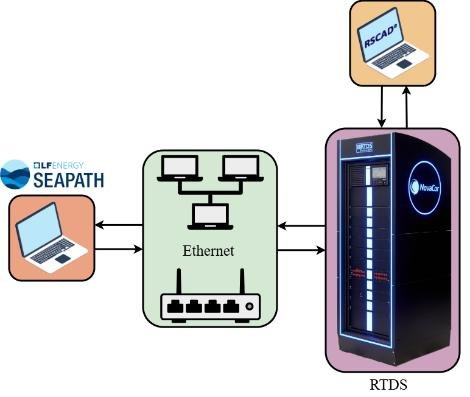
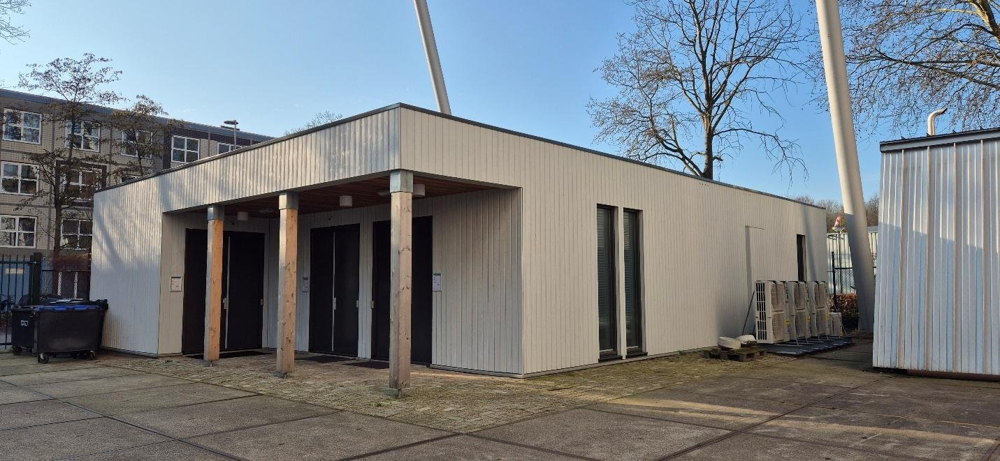

MITIGATE-HARM kick-off
Partners from TUD, RWTH, AUTH and industry met in Delft.
Aleksandra Lekić’s team at TU Delft works on control, protection, and open tools for hybrid AC/DC power systems.

About the group
We study multiport HVDC systems, impedance-based MMC/VSC modelling, Lyapunov and MPC methods, and real-time validation for multi-vendor grids.
“Multi-vendor multi-terminal VSC HVDC with future-proof AC/DC hybrid assessment is a top priority for climate-neutral Europe.”

Projects
Current projects first; completed work (SUNRISE, BiGER Explore, EASY-RES) lives on the full projects page.
Enabling interoperability of multi-vendor HVDC grids
MSCA doctoral network on PE interoperability by openness
CETP/NWO — mitigating harmonics in PE-based systems
Harmonic stability assessment framework (CRESYM)
DC protection, security, control and optimisation
NWO Veni — smart flexible control for PE-based grids
Team
Individual pages will use biographies and project descriptions from your website forms.
News
A simple chronological feed — easy to extend with Markdown or a small CMS later.
Partners from TUD, RWTH, AUTH and industry met in Delft.
Covered by 4TU news.
Control and protection of HVDC/AC electrical grids.
Open source & portfolio
Software and RTDS libraries from the Interoperability Program.
